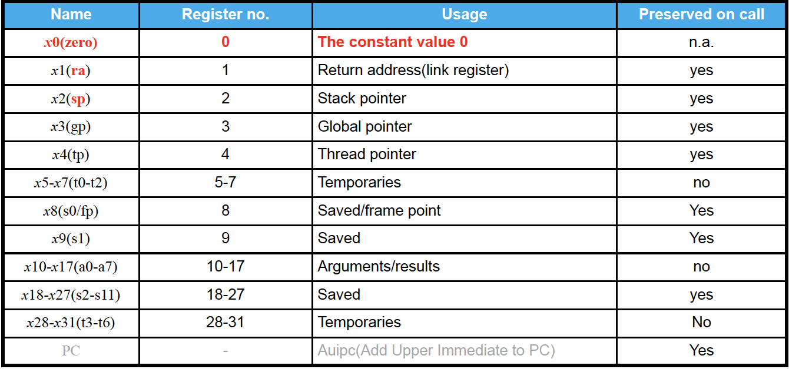
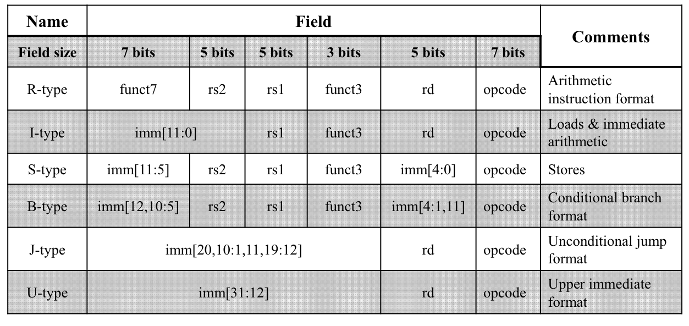

Instruction Set Architecture(ISA)
Instruction Set Architecture(ISA)¶
Introduction to ISA¶
-
Instruction=opcode+operands（操作码+操作数）
- 操作数一般为0/1/2/3
-
指令设计的基本原则
- Simplicity favors regularity
- Make the common case fast
- Smaller is faster
- Good design demands good compromises
ISA Design¶
-
不同操作数下同一指令的表示
- 没有操作数的指令类似于栈的操作
- 操作数越少，指令序列越长
-
寻址模式
- 立即数寻址
- 直接包含需要处理的数据
- e.g. ADD #5
- 直接寻址
- 操作数包含数据的地址
- e.g. ADD 100
- 不直接寻址
- 操作数包含数据的地址的地址
- 寻找范围更大
- e.g. ADD [100]
- 寄存器寻址
- 直接寻址
- 寄存器中直接存储数据
- e.g. ADD R5
- 不直接寻址
- 寄存器中存储数据的地址
- e.g. ADD [R5]
- 直接寻址
- 其余寻址模式
- Indexed 寻址
Example

- 立即数寻址
Classification 分类¶
- CISC：复杂指令集
- 代码更短
- 编译更简单
- RISC：精简指令集
RISC-V¶
指令集分类¶
-
基础指令集
-
I：整数指令
名称 功能 RV32I 32 位基础整数指令集，32 个寄存器 RV32E 32 位基础指令集，16 个寄存器，用于极低端嵌入式应用 RV64I 64 位基础指令集，64 位寄存器，含 64 位数据加载/存储指令
-
-
标准扩展
- M：整数乘除指令
- A：原子指令
- F：单精度浮点指令
- D：双精度浮点指令
- C：16 位压缩指令
- G = IMAFD：整数基础指令集 + 四个标准扩展指令集
- 可选扩展
寄存器¶
- 程序计数器（PC）
-
浮点状态寄存器（fsr）：用于浮点舍入模式以及异常报告
fsr的功能详述
- 浮点舍入模式控制
- 就近舍入（Round to Nearest）：将数值舍入到最接近的可表示值。若出现中间值，例如 2.5，就会舍入到偶数，也就是 2.0。
- 向上舍入（Round Up）：把数值朝正无穷大的方向舍入，比如 2.1 会舍入为 3.0。
- 向下舍入（Round Down）：将数值朝负无穷大的方向舍入，例如 -2.9 会舍入为 -3.0。
- 向零舍入（Round toward Zero）：直接截断小数部分，只保留整数部分，像 2.9 会舍入为 2.0，-2.9 会舍入为 -2.0。
- 异常报告功能
- 上溢（Overflow）：当运算结果超出了浮点数所能表示的范围，例如 1e400（假设为双精度浮点数），就会发生上溢。
- 下溢（Underflow）：运算结果过小，无法用浮点数精确表示时，如下溢情况。
- 除以零（Division by Zero）：当进行除法运算时，除数为零，比如 1.0 / 0.0，就会触发该异常。
- 无效操作（Invalid Operation）：进行一些未定义的运算，例如对负数开平方，即 sqrt(-1)，会引发无效操作异常。
- 不精确（Inexact）：运算结果无法精确表示，需要进行舍入时，就会出现不精确的情况，如 1.0 / 3.0。
-
整数寄存器（32/64 bit）
- 32个（x0~x31）
- x0只能存储0
- 浮点数寄存器（单/双精度）
- 32个（f0~f31）
| 寄存器 | ABI 名称 | 用途描述 | saver |
|---|---|---|---|
| x0 | zero | 硬件 0 | |
| x1 | ra | 返回地址（return address） | caller |
| x2 | sp | 栈指针（stack pointer） | callee |
| x3 | gp | 全局指针（global pointer） | |
| x4 | tp | 线程指针（thread pointer） | |
| x5 | t0 | 临时变量/备用链接寄存器（alternate link reg） | caller |
| x6-7 | t1-2 | 临时变量 | caller |
| x8 | s0/fp | 需要保存的寄存器/帧指针（frame pointer） | callee |
| x9 | s1 | 需要保存的寄存器 | callee |
| x10-11 | a0-1 | 函数参数/返回值 | caller |
| x12-17 | a2-7 | 函数参数 | caller |
| x18-27 | s2-11 | 需要保存的寄存器 | callee |
| x28-31 | t3-6 | 临时变量 | caller |
不同寄存器的功能

基础整数指令集RV32I¶
-
分类
- 按照功能分类
- ALU 指令
- e.g. add,sub,addi...
- Load/Store 指令
- e.g. ld,lw,lh,sw,sd,fld...
- Branch/Jump 指令
- e.g. jal(跳转),jalr,beq(比较)...
- ALU 指令
-
按照编码格式分类
- R,I,S,B,U,J
- opcode占右边的7位，表示指令是什么类型

- 按照功能分类
-
R-type
31 25 24 20 19 15 14 12 11 7 6 0 funct7 rs2 rs1 funct3 rd opcode - rd = rs1 op rs2
- 没有not运算符，通过xor实现
-
I-type
31 20 19 15 14 12 11 7 6 0 imm[11:0] rs1 funct3 rd opcode - 如果是 ALU 运算，则 rd = rs1 op imm
- 立即数指令（立即数是有符号数）
- e.g. Load指令
-
S-type
31 25 24 20 19 15 14 12 11 7 6 0 imm[11:5] rs2 rs1 funct3 imm[4:0] opcode - rs1 = [rs2+imm]
Notice!
- RISC-V的数据存储模式为小端模式（little endian）：数据的高字节储存在高地址
- PowerPC使用大端模式
-
B-type
31 25 24 20 19 15 14 12 11 7 6 0 imm[12,10:5] rs2 rs1 funct3 imm[4:1,11] opcode -
U-type
31 12 11 7 6 0 imm[31:12] rd opcode - LUI: load upper immediate
- AUIPC: add upper immediate to PC
-
J-type
31 12 11 7 6 0 imm[20,10:1,11,19:12] rd opcode
NOP
- 表示空指令，没有操作
- e.g. ADDI x0,x0,0;
根据opcode判断指令类型¶
| 指令类型 | 操作码（二进制） | 操作码（十六进制） | 典型指令 |
|---|---|---|---|
| R型 | 0110011 |
0x33 | add, sub, mul |
| I型（算术） | 0010011 |
0x13 | addi, slli, xori |
| I型（加载） | 0000011 |
0x03 | lb, lw, ld |
| I型（跳转） | 1100111 |
0x67 | jalr(唯一) |
| S型（存储） | 0100011 |
0x23 | sb, sw, sd |
| B型（分支） | 1100011 |
0x63 | beq, bne, blt |
| U型 | 0110111 |
0x37 | lui |
| J型 | 1101111 |
0x6F | jal |
RISC-V指令编码总结
| 指令格式 | 指令名称 | 操作码（二进制） | funct3（二进制） | funct6/7（二进制） | 功能简述 |
|---|---|---|---|---|---|
| R - type | add | 0110011 | 000 | 0000000 | 寄存器加法 |
| sub | 0110011 | 000 | 0100000 | 寄存器减法 | |
| sll | 0110011 | 001 | 0000000 | 逻辑左移 | |
| xor | 0110011 | 100 | 0000000 | 按位异或 | |
| srl | 0110011 | 101 | 0000000 | 逻辑右移 | |
| sra | 0110011 | 101 | 0000000 | 算术右移 | |
| or | 0110011 | 110 | 0000000 | 按位或 | |
| and | 0110011 | 111 | 0000000 | 按位与 | |
| lr.d | 0110011 | 011 | 0001000 | 加载双字并保留（特定功能 ） | |
| sc.d | 0110011 | 011 | 0001100 | 存储双字并检查（特定功能 ） | |
| I - type | lb | 0000011 | 000 | n.a. | 加载字节 |
| lh | 0000011 | 001 | n.a. | 加载半字 | |
| lw | 0000011 | 010 | n.a. | 加载字 | |
| ld | 0000011 | 011 | n.a. | 加载双字 | |
| lbu | 0000011 | 100 | n.a. | 加载无符号字节 | |
| lhu | 0000011 | 101 | n.a. | 加载无符号半字 | |
| lwu | 0000011 | 110 | n.a. | 加载无符号字 | |
| addi | 0010011 | 000 | n.a. | 立即数加法 | |
| slli | 0010011 | 001 | 000000 | 立即数逻辑左移 | |
| xori | 0010011 | 100 | n.a. | 立即数按位异或 | |
| srli | 0010011 | 101 | 000000 | 立即数逻辑右移 | |
| srai | 0010011 | 101 | 010000 | 立即数算术右移 | |
| ori | 0010011 | 110 | n.a. | 立即数按位或 | |
| andi | 0010011 | 111 | n.a. | 立即数按位与 | |
| jalr | 1100111 | 000 | n.a. | 寄存器跳转并链接 | |
| S - type | sb | 0100011 | 000 | n.a. | 存储字节 |
| sh | 0100011 | 001 | n.a. | 存储半字 | |
| sw | 0100011 | 010 | n.a. | 存储字 | |
| sd | 0100011 | 111 | n.a. | 存储双字 | |
| B - type | beq | 1100011 | 000 | n.a. | 相等则分支 |
| bne | 1100011 | 001 | n.a. | 不相等则分支 | |
| blt | 1100011 | 100 | n.a. | 小于则分支 | |
| bge | 1100011 | 101 | n.a. | 大于等于则分支 | |
| bltu | 1100011 | 110 | n.a. | 无符号小于则分支 | |
| bgeu | 1100011 | 111 | n.a. | 无符号大于等于则分支 | |
| U - type | lui | 0110111 | n.a. | n.a. | 加载立即数高位 |
| J - type | jal | 1101111 | n.a. | n.a. | 跳转并链接 |
汇编语言¶
函数调用¶
- 步骤
- 将参数放置在函数能够访问的位置（寄存器/栈）
- 跳转到函数（jal）
- 获取函数所需的局部存储资源，按需保存寄存器
- 执行函数
- 将函数返回值放置在调用程序能够访问的位置，恢复任何被保存的寄存器，并释放任何局部存储资源
- 由于一个函数可能在程序中的多个位置被调用，需将控制权返回至调用点（ret 指令）
- 函数序言与尾声
-
序言（函数开始部分，为函数执行做准备）
-
若函数参数和变量过多，寄存器无法容纳，函数序言会在栈上为函数帧（frame）分配空间
通过调整栈指针（sp）来实现，e.g.
addi sp,sp,-framesize -
返回地址保存：在函数执行完后需要回到调用它的地方继续执行，因此要保存返回地址
e.g.
sw ra,framesize - 4(sp) -
寄存器保存：如果函数执行过程中会使用到一些寄存器，而这些寄存器中的值在函数返回后调用者还需要使用，那么函数需要在使用这些寄存器之前将其值保存到栈上，后续函数执行完再恢复，保证不破坏调用者寄存器中的原有数据
-
-
尾声（函数执行结束时运行，恢复函数调用前的环境并返回）
- 寄存器恢复：如果之前在函数序言中保存了寄存器的值到栈上，这里需要将其恢复到原来的寄存器中，确保调用者后续代码能正常运行
- 返回地址恢复：
lw ra,framesize - 4(sp) - 栈帧空间释放：
addi sp,sp,framesize - 返回调用点：
ret指令(等价于jalr x0, 0(ra))
-
过程调用指令
-
Example
-
递归求阶乘
stack¶
- push/pop
- 两种寄存器
- temporary：由主函数负责，不需要压栈
- saved：由被调用函数负责，需要压栈
程序运行¶
- preprocessor(*.c->*.i):宏展开
- complier(*.i->*.s):生成汇编文件
- assembler(*.s->*.o):生成目标文件
- linker(*.o->*.out):生成可执行文件